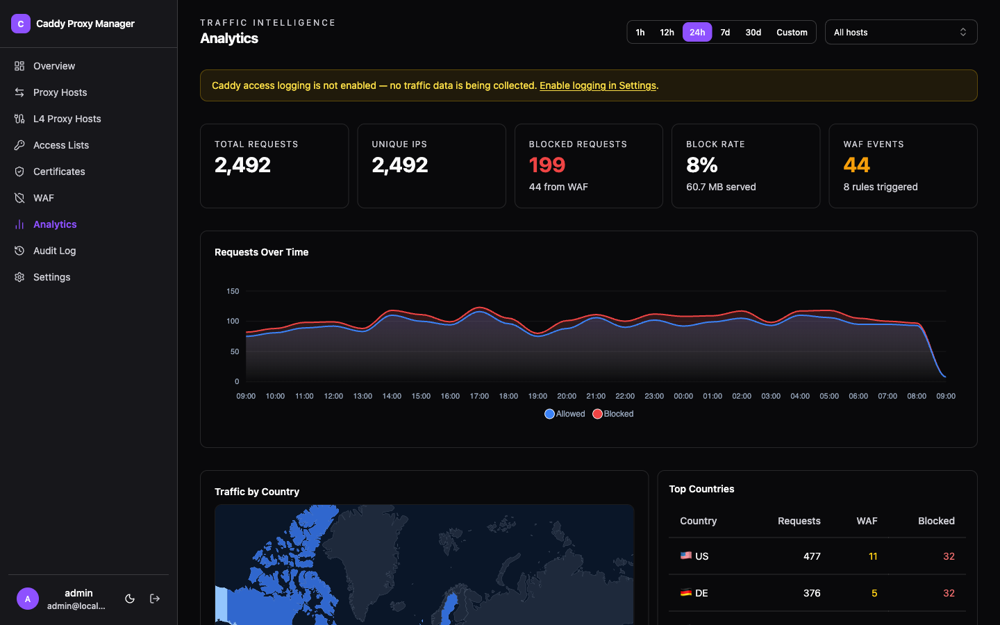
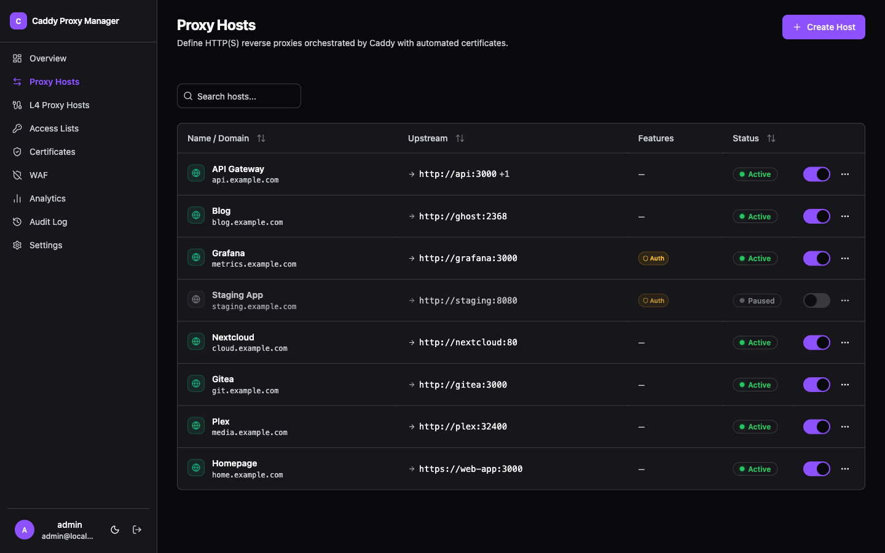
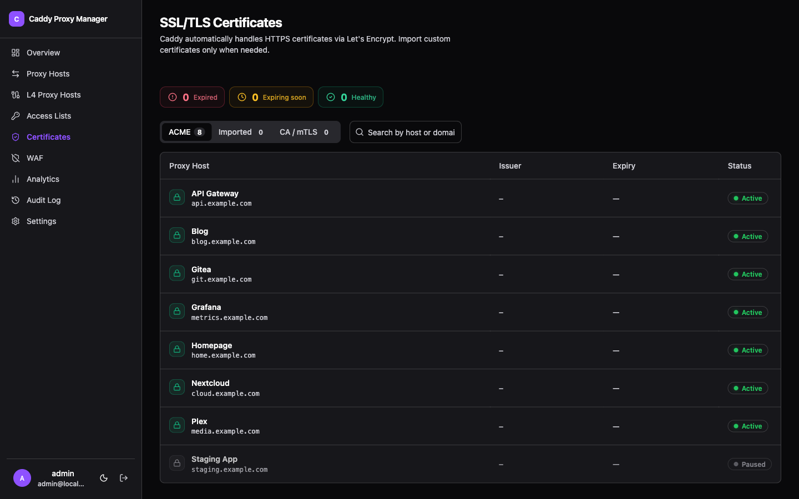
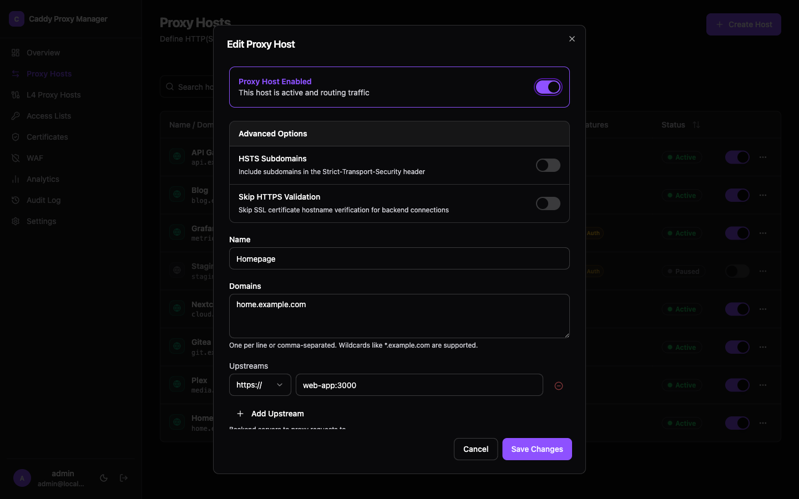
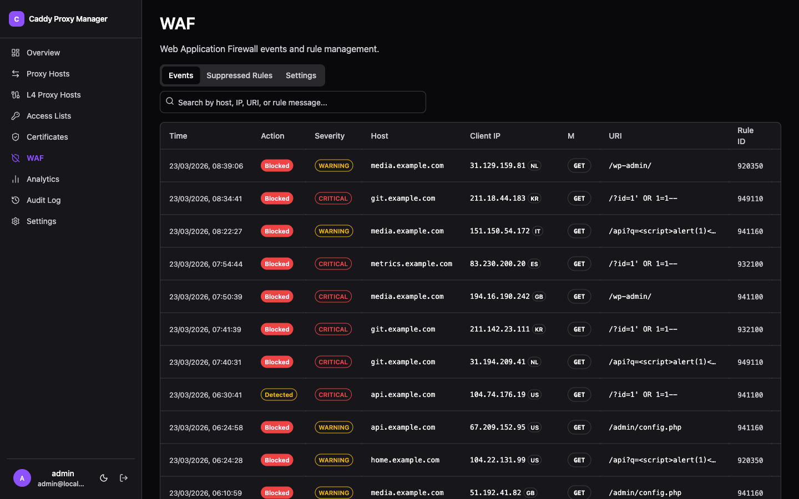

Control Every Edge.
The modern web interface for Caddy Server. WAF protection, automatic HTTPS, geo blocking, L4 TCP/UDP proxying, traffic analytics, instance sync, and a full audit trail. All in one place.

Powerful Simplicity
Everything you need to manage your infrastructure, nothing you don't.
Reverse Proxy
Configure multiple upstreams, load balancing, custom headers, and per-host enable/disable with a clean editor.
L4 TCP/UDP Proxy
Layer 4 stream proxying for TCP and UDP. TLS SNI matching, proxy protocol, health checks, and geo blocking at the transport layer.
WAF
Web Application Firewall powered by Coraza with OWASP CRS. Block SQLi, XSS, LFI, and RCE with per-host control and rule suppression.
Auto HTTPS & CA
Automatic TLS via Caddy ACME with Let's Encrypt and Cloudflare DNS-01. Built-in CA for issuing internal client certificates.
Traffic Analytics
Live request charts, country heatmap, top user agents, and blocked request log across any time range.
Geo Blocking
Block or allow by country, continent, ASN, CIDR, or exact IP per host, with priority allow-override rules.
Access Control
HTTP basic auth lists or full OAuth2/OIDC SSO via Authentik, Keycloak, Auth0, and any OIDC provider.
Instance Sync
Master/slave configuration sync for multi-instance deployments. Push proxy hosts, certs, and settings to replicas on every change.
Audit Log
Every configuration change is tracked and full-text searchable. See who did what and when.
See every request,
in real time.
Charts, country heatmaps, user agent breakdowns, and a paginated blocked-request log. Filter by host or pick any time range from the last hour to 30 days.

Every reverse proxy,
one interface.
Search across all hosts, toggle them on or off instantly, and configure upstreams, load balancing, and access lists without touching a config file.

HTTPS by default.
Visibility built in.
Caddy handles certificate issuance automatically. The Certificates page shows issuer, expiry, and status for every managed cert. Import custom certs or use the built-in CA to issue internal client certificates.

Every option,
without the YAML.
The host editor exposes load balancing policies, Authentik forward auth, custom DNS resolvers, upstream DNS pinning, geo blocking rules, and HSTS all from a single form.

WAF protection,
zero config.
Enable the Coraza-powered WAF with OWASP Core Rule Set in one click. View blocked and detected events, suppress noisy rules globally or per host, and add custom SecLang directives.

Deploy in Seconds
A single docker-compose file is all you need.
Access at http://localhost:3000 · Data persists in Docker volumes